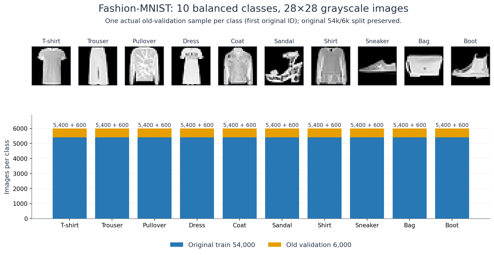
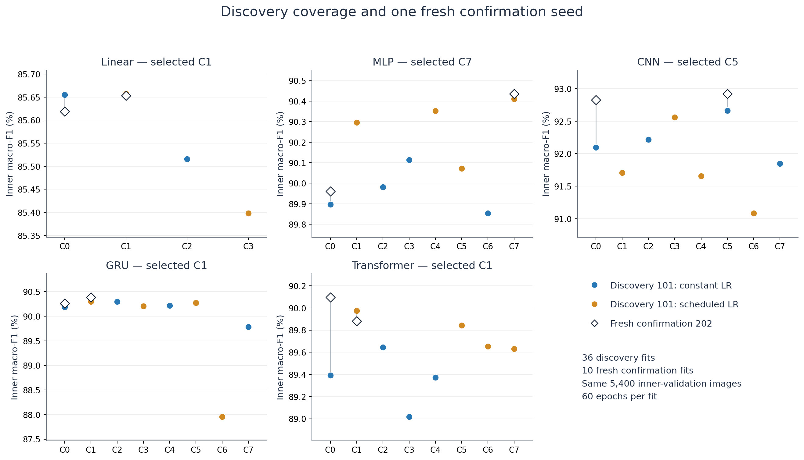
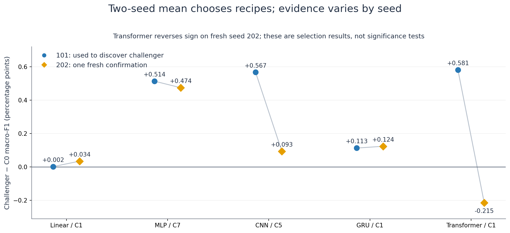
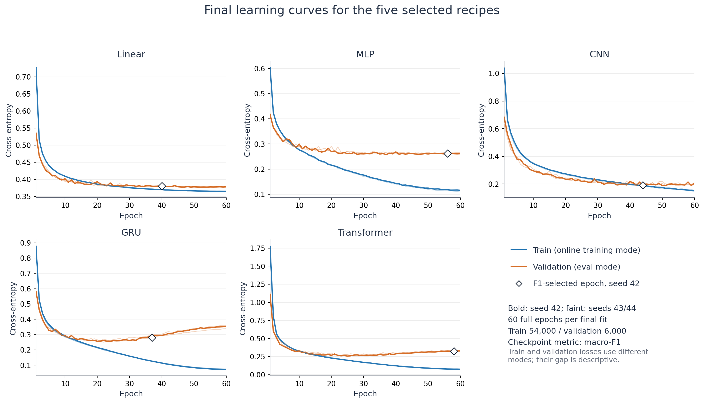
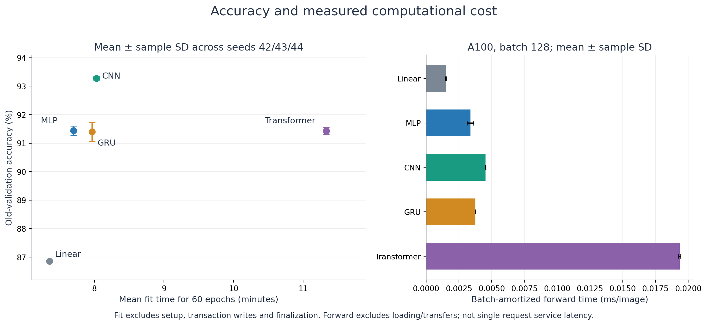
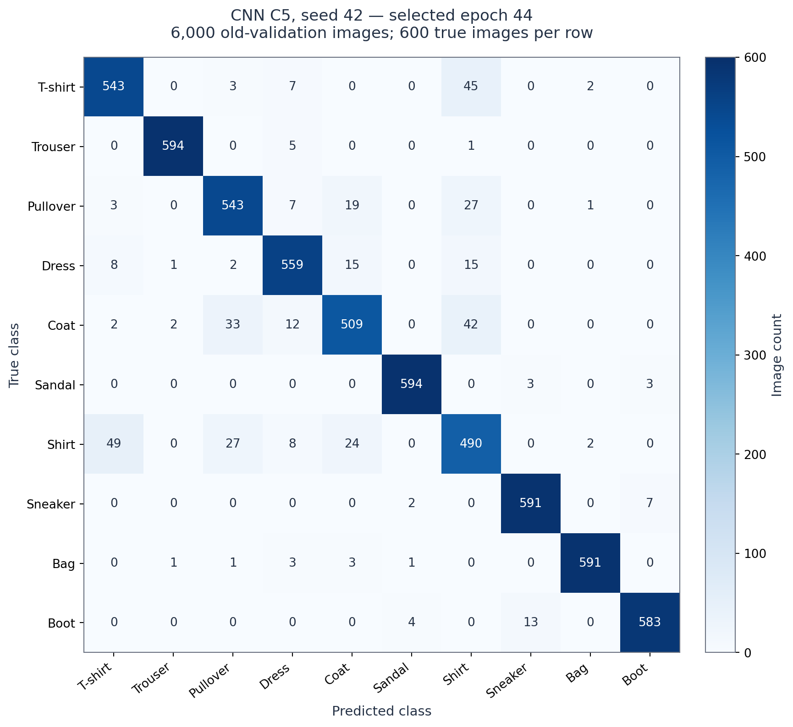
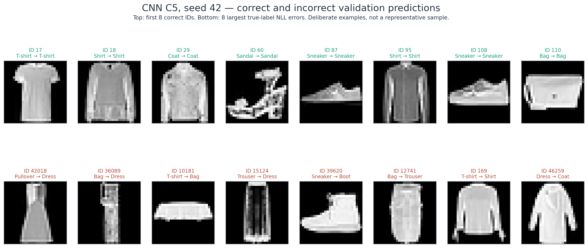

Problem and data
Given a 28×28 grayscale product image, predict one of ten Fashion-MNIST categories. Closely related upper-body garments make silhouette and boundary information important; accuracy alone hides these class-level errors.
The original 60,000 training images are partitioned into 54,000 training and 6,000 validation images with stratification and seed 42. The official 10,000-image test partition is separate. All inputs use float32 values in [0,1], with no augmentation or pretrained weights.


For recipe selection, an inner split uses 48,600 images for training and 5,400 for validation. Final selected recipes return to 54,000 training images and the previously seen 6,000-image validation set. The latter selects the reported final checkpoints.
Source: Zalando Research Fashion-MNIST, MIT license. Split indices and dataset content fingerprints are retained. Disjoint image IDs do not establish that product-level or near-duplicate leakage is absent.
Architectures and training
Each model produces ten logits for cross-entropy loss. PyTorch supplies the underlying neural-network layers and automatic differentiation; the project implements composition, data handling, training, evaluation and experiment control.
| Model | Input representation and structure | Parameters |
|---|---|---|
| Linear | 784 flattened pixels → 10 logits | 7,850 |
| MLP | 784 → 256 → ReLU → 10 logits | 203,530 |
| CNN | Three convolution blocks, pooling and global spatial mean | 93,962 |
| GRU | 28 ordered rows, 28 inputs per step, hidden size 128 | 61,962 |
| Transformer | 49 projected 4×4 patches, positions and two attention encoder layers | 274,954 |
All optimization tasks use batch size 128, 60 epochs, gradient clipping at norm 1.0 and the same fixed tensor shapes. Optimizer, learning rate, dropout and scheduling form the recipe being compared. This is a complete-recipe study, not an architecture-only causal ablation.
| Model | Recipe | Learning rate | Schedule | Weight decay | Dropout |
|---|---|---|---|---|---|
| Linear | C1 | 0.001 | Cosine | 0 | 0 |
| MLP | C7 | 0.00100979 | Cosine | 1e-05 | 0.2 |
| CNN | C5 | 0.00143809 | Constant | 0.0001 | 0.3 |
| GRU | C1 | 0.001 | Cosine | 0.0001 | 0 |
| Transformer | C1 | 0.0005 | Warm-up + cosine | 0.0001 | 0.1 |
Dropout denotes the hidden-state dropout for MLP/GRU and configured dropout for CNN/Transformer. Full configurations are available in the protocol and optimization source.
A fixed selection protocol
- Discover
36 frozen candidates. Train each for 60 epochs on the inner split, using seed 101. Choose one non-anchor challenger per family.
- Confirm
10 tasks compare each challenger with C0 on fresh seed 202. The locked selection rule averages selected inner macro-F1 across seeds 101 and 202.
- Fit and report
15 tasks fit five selected recipes with seeds 42, 43 and 44 on 54,000 images. Report checkpoint-selected scores on the old 6,000-image validation set.
Optuna 4.8.0 RandomSampler supplies a fixed candidate set; it is not an adaptive or global-optimum search. Linear has four candidates and each other family eight. Each epoch is completed; there is no pruning or early stopping. Checkpoints maximize validation macro-F1, then minimize cross-entropy, then retain the earliest epoch.


What confirmation supports
| Model | Anchor → selected | Seed 101 ΔF1 (pp) | Seed 202 ΔF1 (pp) | Mean ΔF1 (pp) |
|---|---|---|---|---|
| Linear | C0 → C1 | +0.0020 | +0.0344 | +0.0182 |
| MLP | C0 → C7 | +0.5136 | +0.4743 | +0.4940 |
| CNN | C0 → C5 | +0.5668 | +0.0930 | +0.3299 |
| GRU | C0 → C1 | +0.1130 | +0.1236 | +0.1183 |
| Transformer | C0 → C1 | +0.5812 | -0.2146 | +0.1833 |


The Transformer challenger gains on seed 101 but loses on fresh seed 202. It is retained by the declared two-seed mean rule. That rule is a selection heuristic, not a significance test; reuse of discovery seed 101 leaves selection bias.
Final exploratory validation
| Model | Recipe | Accuracy (%) | Macro-F1 | Parameters |
|---|---|---|---|---|
| Linear | C1 | 86.8556 ± 0.0096 | 0.86851 ± 0.00024 | 7,850 |
| MLP | C7 | 91.4389 ± 0.1669 | 0.91448 ± 0.00153 | 203,530 |
| CNN | C5 | 93.2778 ± 0.0585 | 0.93308 ± 0.00027 | 93,962 |
| GRU | C1 | 91.4000 ± 0.3279 | 0.91367 ± 0.00376 | 61,962 |
| Transformer | C1 | 91.4333 ± 0.1202 | 0.91431 ± 0.00096 | 274,954 |
Read these as selected-validation scores. The same old 6,000 images select the checkpoints and provide these measurements. Sample SD uses three training seeds on one fixed split; it is neither a confidence interval nor uncertainty over unseen datasets.

CNN combines local spatial features with 93,962 parameters and has the highest observed mean macro-F1. GRU has the smallest nonlinear parameter count. The closely grouped MLP, GRU and Transformer results should be interpreted with their training-seed variation and recipe differences.


Final selected epochs vary across seeds: CNN selects epochs 44, 60 and 55; GRU selects 37, 28 and 34. A fixed epoch budget does not imply convergence, and the final epoch is not always the selected checkpoint.
Accuracy and computation
| Model | Parameters | Mean fit (s) | Forward (ms/image) |
|---|---|---|---|
| Linear | 7,850 | 441.36 | 0.001500 |
| MLP | 203,530 | 462.01 | 0.003381 |
| CNN | 93,962 | 481.90 | 0.004532 |
| GRU | 61,962 | 477.95 | 0.003752 |
| Transformer | 274,954 | 679.87 | 0.019353 |


Fit time includes completed training and validation loops plus in-memory checkpoint selection. It excludes transaction writes and finalization. Forward latency is batch-amortized: 128 already-on-GPU images, ten warm-up passes and fifty measured passes, excluding loading and transfers.
The complete controller records 8.34 active hours within a seven-day upper cap. The cap is a limit, not a claim that seven days were consumed. The recorded GPU is NVIDIA A100-SXM4-40GB with PyTorch 2.11.0+cu130 and CUDA 13.0.
Where the model still fails
For CNN C5, seed 42, the selected validation checkpoint predicts 5,597 of 6,000 images correctly. Shirt remains a difficult category: related outlines lead to confusion with T-shirt/top, Coat and Pullover.


| True class | Predicted class | Images | Within true class |
|---|---|---|---|
| Shirt | T-shirt/top | 49 | 8.17% |
| T-shirt/top | Shirt | 45 | 7.50% |
| Coat | Shirt | 42 | 7.00% |
| Coat | Pullover | 33 | 5.50% |
| Pullover | Shirt | 27 | 4.50% |


Shape similarity is a plausible explanation, not a verified cause. Class-specific evaluation, alternative regularization and data-focused inspection would be useful next investigations. They have not been run as additional results here.
Original official-test results
The earlier five-model experiment used seed 42 and a 20-epoch budget. Each checkpoint was chosen by minimum validation cross-entropy, and all five were frozen before evaluation on the official test partition.
| Model | Test accuracy | Test macro-F1 | Parameters |
|---|---|---|---|
| Linear | 84.68% | 0.845902 | 7,850 |
| MLP | 88.74% | 0.886994 | 203,530 |
| CNN | 89.59% | 0.895242 | 93,962 |
| GRU | 89.14% | 0.891450 | 61,962 |
| Transformer | 88.94% | 0.888288 | 274,954 |
These measured test results remain unchanged. The later 60-epoch optimization uses different recipes, a different checkpoint criterion and selected validation data, so its scores cannot be read as test-set gains over this table.
Materials and reproduction
- Final report →PDF
- Editable LaTeX project →ZIP
- Presentation slides →PowerPoint
- Slides for reading →PDF
- Presentation script in Vietnamese →Source
- Student-run A100 notebook →Notebook
- Reproduction and checkpoint instructions →Guide
- Task evidence and 15 final checkpoints →Source
- Verified results and figure data →JSON
- Matched training and prospective RGB audit →Results
- Matched confirmation notebook →Notebook
- Completed follow-up methods and full tables →Study
- GarmentLab controlled-study notebook and recorded results →Notebook
- GarmentLab methods, reproduction and local service →Guide
Run a new optimization study
python -m pip install -r requirements-a1-optimization.txt
python tools/run_a1_optimization.py --stage plan --out outputs/opt3_reproduction --device cuda
python tools/run_a1_optimization.py --stage smoke --out outputs/opt3_reproduction --device cuda
python tools/run_a1_optimization.py --stage run --out outputs/opt3_reproduction --device cuda
python tools/run_a1_optimization.py --stage export --out outputs/opt3_reproductionUse an A100 runtime with compatible PyTorch/torchvision. Resume an interrupted task by rerunning into the same output directory with its recorded source and environment. Start an independent experiment in a new directory. The optimization runner does not open or evaluate the official test partition.
Evidence: 715 export-manifest hashes, 61 completed tasks and 122 strict CPU checkpoint loads were verified. All 338,400 saved prediction rows were checked in the independent statistics review. Artifact audit · Statistics audit · Repository setup guide.
GarmentLab real-image extension
A separate six-class Fashionpedia extension uses pretrained MobileNetV3-Small. Across three paired seeds, fine-tuning records assessment Macro-F1 0.7747 ± 0.0149, compared with 0.6770 ± 0.0055 for a frozen backbone. Assessment has 327 crops from 221 source groups. The frozen review policy gives 92.54% accepted accuracy at 69.72% coverage, below its empirical 95% calibration target.
Read the real-image results, calibration and export checks →. The extension has its own data, model and release evidence.
The subsequent 20-fit controlled study selected dropout 0.4 (C4) on fresh confirmation seeds. On the reused assessment, its mean Macro-F1 is 0.7664 ± 0.0226, versus 0.7747 ± 0.0149 for the paired C0 anchor; this does not establish a classification gain. A disjoint calibration procedure gives the preset C4 seed314 95.05% accepted accuracy at 55.66% coverage. The statistical risk bound is conditional on assumptions, not a future-accuracy guarantee. The PyTorch CPU demo passes the expanded numerical and service checks. ONNX passes the original 64-case audit but fails the broader 327-crop 1e-4 logit criterion; it remains experimental and is not the primary serving backend.
Conclusions and limits
This project shows how representation and training choices interact in a controlled small-image task. CNN is the highest-scoring observed recipe in both evidence layers; GRU is compact, and model size alone does not determine runtime. The study supports those bounded comparisons, not a universal ranking of model families.
- The final validation set was previously seen and selects the checkpoint; no new blind test was performed.
- Only one fresh seed confirms each challenger, and discovery-seed reuse can favor a selected candidate.
- Three final seeds describe stochastic training variation on a fixed split.
- Fresh matched final C0 anchors are absent; historical comparisons mix recipe, engine and checkpoint-rule changes.
- Raw predictions support independent scores, but logs and checksums do not replace scrutiny of assumptions or human understanding.
Authors and AI disclosure
AI assisted LaTeX writing and pipeline development. AI usage disclosure.